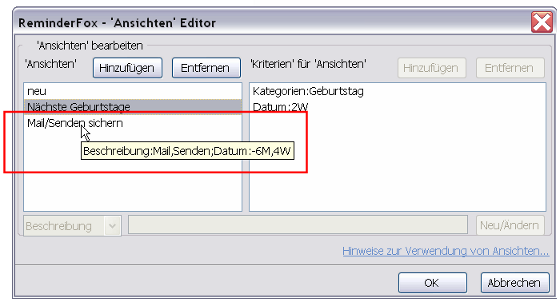
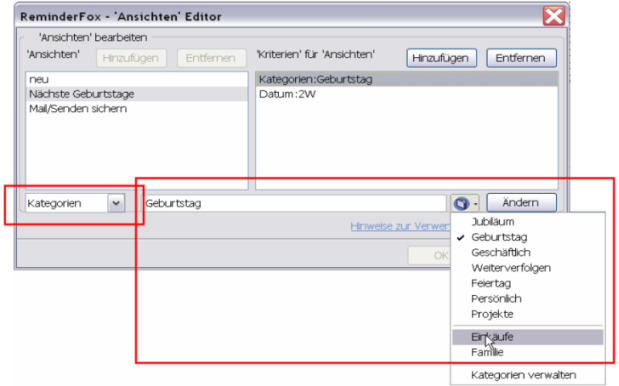
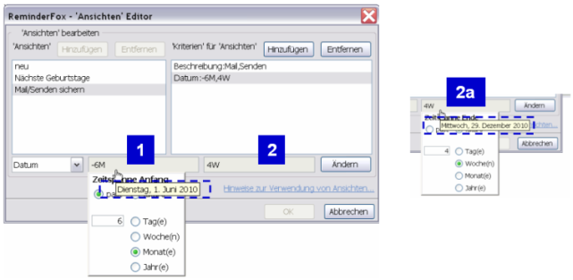

'Ansichten/Views' - Editor
'Ansichten/Views' - Editor
'Ansichten/Views' - Editor
'Ansichten/Views' - EditorDas Definieren vieler Erinnerungen/Todos mit Reminderfox ergibt eine lange Liste und einen umfangreichen Kalender mit vielen Tageseinträgen. Außerdem sieht man den gesuchten Eintrag nicht schnell, eine Fokussierung auf bestimmte Ereignisse oder Gruppen von Ereignissen kann schwer sein.
Reminderfox bietet einen 'Filter', aber dadurch kann der Benutzer nur einen Textbegriff vorgeben. Mit 'Ansichten' (Views) bietet Reminderfox die Möglichkeit Textsuchbegriffe und Zeitbereiche zu kombinieren. Dies läßt sich durch UND oder ODER verknüpfen.
Der 'Ansichten' View Editor ermöglicht es dem Benutzer, diese 'Ansichten' zu definieren und zu bearbeiten.
Inhalt |
Der 'Ansichten/View Editor' hat drei Teile:

Im linken Fenster werden die 'Ansichten' hinzugefügt oder gelöscht. Haben vorhandene 'Ansichten' bereits 'Kriterien', so zeigt der ToolTipText diese Argumente an, ohne dass sie angeklickten werden müssen.
Durch die Auswahl einer 'Ansicht' im linken Fenster werden die definierten 'Kriterien' im rechten Fenster angezeigt. Auch hier lassen sich 'Kriterien' hingefügen oder löschen.

In jeder Zeile wird ein Kriterientyp bearbeitet. Wird eine Zeile aktiviert, so schaltet sich im unteren Bereich das passende Editierfeld ein, die vorstehende Darstellung bezieht sich auf "Kategorien".
Wie vorstehend gesagt haben Datumsdefinitionen ein oder zwei Werte. Der linke Wert bestimmt den Anfang einer "Zeitspanne", der rechte Wert das Ende der "Zeitspanne". Für beide Datumsangaben kann die Zeitspanne in der Vergangenheit ('past') oder in der Zukunft ('future') liegen. Wird ein Wert zu "0" angegeben, wird er ignoriert, es entsteht eine Zeitspanne mit Bezug auf 'Heute', d.h. bis/ab heute.

Beispiel
Für die Ansicht "Mail/Senden sichern" ist eine Definition mit den Kriterien Beschreibung:Mail,Senden;Datum:-6M,4W angegeben mit der Absicht, die Erinnerungen zur Datensicherung zu exportieren.
Mit der Definition werden alle Ereignisse ausgewählt, in deren Beschreibung 'Mail' ODER 'Senden' vorkommt UND in der Zeitspanne von heute "6 Monate, past" [1] zurück und "4 Wochen, future" [2] und [2a] in der Zukunft liegen; d.h. die
Zeitangaben beziehen sich jeweils auf "Heute".
Beide Datumsfelder zeigen als ToolTipText das jeweils resultierende Datum(hier 1.Juni 2010 und 29.Dezember 2010).
A 'view' with multiple 'criteria' works as an AND --> The example above works like this: select all reminders/todos with the defined 'Description:Medicine' AND the defined 'Date' span.
Multiple criteria with the same attribute type work as an AND --> Two rows with separate definitions "Description:Mail" and "Description:Send" would look for reminders/todos with both keywords in the description/summary.
Multiple values for one criteria separated with an comma work as an OR --> A definition "Description:Mail,Send" would look for reminders/todos with at least one of those keywords in the description/summary.
{kind=link}